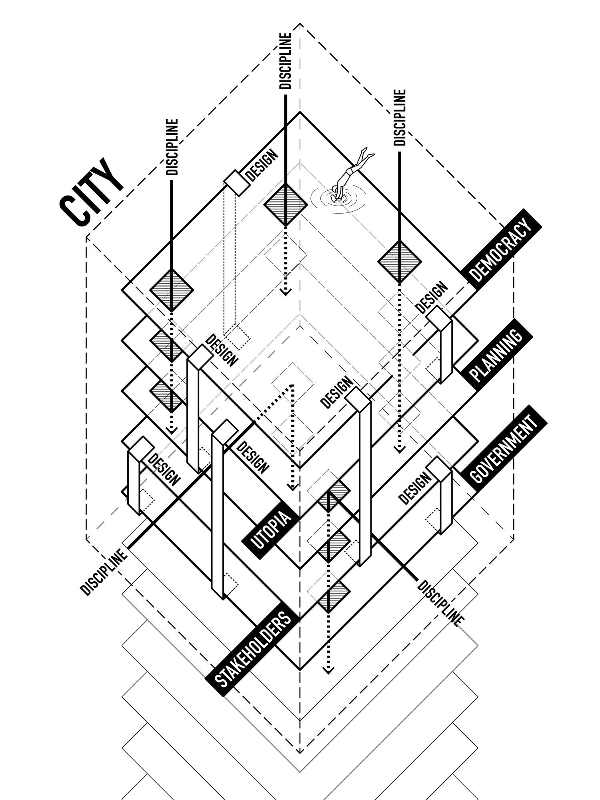
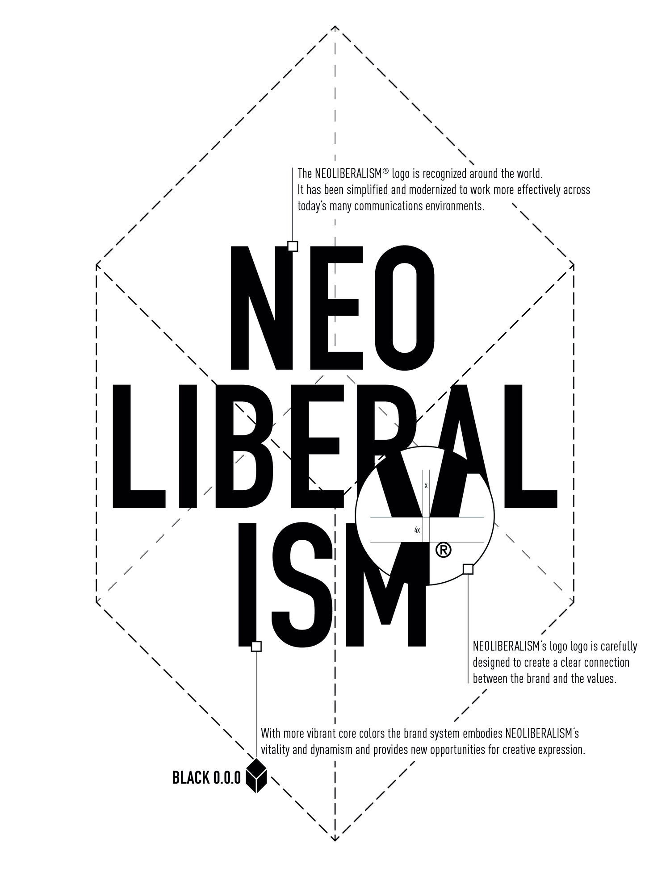

Research Focus
Supporting municipalities in making knowledge made public through participatory processes an asset for future urban policies.
How can design support municipalities in framing the legacy of participatory processes on urban transformation and make it impactful on different levels: urban, social, cultural, and environmental?
City as a Layer Framework

The multidimensional framework showing how design operates across stakeholders, disciplines, and governance dimensions to support urban transformation processes.
Design System

The visual identity and design system specifications for consistent brand representation.